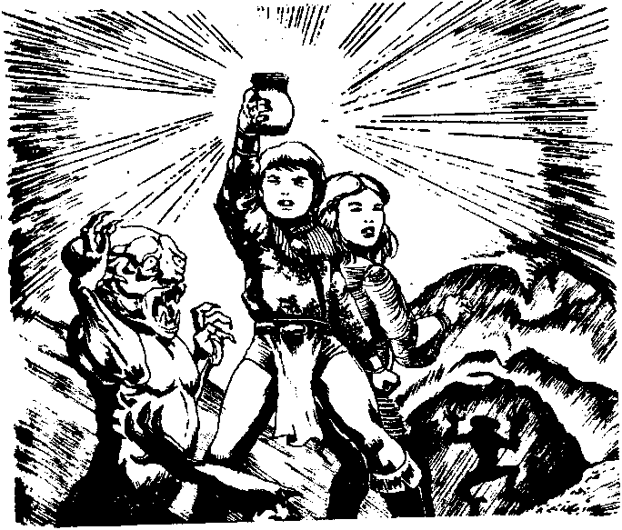
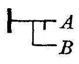
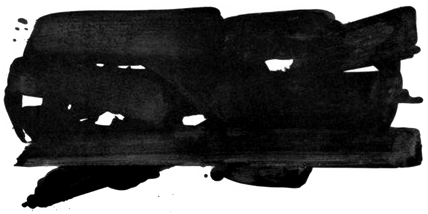

Rewriting languages are typically made of rules and a starting state.
These languages often have two phases; the first gives a set of rules, and the second provides an input objects on which those rules are to be applied, sometimes called the Accumulator. For example, a program for a string rewriting system with wildcards begins with a series of rules which define strings to match, a relation(>), and the resulting transformation.
rule swap ?x ?y > ?y ?x input swap foo bar output bar foo
Fractran is a computer architecture based entirely on the multiplication of fractions.
A prime is a number that can only be divided by itself one, since these numbers can't be divided, they can considered the DNA of other numbers. The factoring of a number into prime numbers, for example: 18 = 2 × 32, exposes values which Fractran utilizes as registers. There are two parts to a Fractran program:
The Accumulator
| Accumulator | Registers | |||
|---|---|---|---|---|
| r2 | r3 | r5 | r7 | |
| 6 | 1 | 1 | ||
| 18 | 1 | 2 | ||
| 1008 | 4 | 2 | 1 | |
| 5402250 | 1 | 2 | 3 | 4 |
The Accumulator is a single number whose prime factorization holds the value of registers(2, 3, 5, 7, 11, 13, 17, ..). For example, if the state of the accumulator is 1008(2⁴ × 3² × 7), r2 has the value 4, r3 has the value 2, r7 has the value 1, and all other registers are unassigned.
The Fraction

A Fraction represents an instruction that tests one or more registers by the prime factors of its numerator and denominator. To evaluate the result of a rule we take the the accumulator, if multiplying it by this fraction will give us an integer, we will update the accumulator with the result.
| 2/3 | 15/256 | 21/20 |
|---|---|---|
| (21)/(31) | (31 × 51)/(26) | (31 × 71)/(22 × 51) |
if(r3 >= 1){ r3 -= 1; r2 += 1; return; } |
if(r2 >= 6){ r2 -= 6; r3 += 1; r5 += 1; return; } |
if(r2 >= 2 && r5 >= 1){ r2 -= 2; r5 -= 1; r3 += 1; r7 += 1; return; } |
Operations become more readable when broken down into their primes. We can think of every prime number as having a register which can take on non-negative integer values. Each fraction is an instruction that operates on some of the registers.
A Notation
While Fractran is commonly reduced to just another opaque esoteric language, portraying it as such is doing a disservice to the relatively simple idea at its core and to the researchers who might otherwise benefit by venturing deeper into a relatively unexplored field of computation.
Wryl, who created Modal, demonstrated to me an interesting connection between Fractran and rewriting languages. We need only to compile our rules and point the prime registers to symbols in a dictionary to see this relationship more clearly.
:: left side > right side 15/6 left.2 side.3 > side.3 right.5 AC 6 left side accumulator 00 6 × 15/6 = 15, side right result
This documentation will represent registers with names(x, y, foo-bar, baz, ..). Fractions will be
written as rewrite rules starting with ::, a left-side, a
spacer(>) and a right-side. The notation indicates which registers to replace
on the left-side, and what to replace them with on the right-side.
Programming In Fractran
In a rule definition, which is a fraction where prime factorization is written as symbols, we find symbols to the left-side of the spacer(>) to be rewritten by symbols found on the right-side. Each new symbol is added to the dictionary and represented internally as a prime number.
:: flour sugar apples > apple-cake :: apples oranges cherries > fruit-salad :: fruit-salad apple-cake > fruit-cake sugar oranges apples cherries flour apples
Rules are tested in a sequence from the first to the last, when a valid rewrite rule is encountered, the accumulator is updated by the product of the multiplication of the accumulator with the fraction, and search for the next rule starts back again from the beginning.
:: 7/30 flour.2 sugar.3 apples.5 > apple-cake.7 :: 17/715 apples.5 oranges.11 cherries.13 > fruit-salad.17 :: 19/119 apple-cake.7 fruit-salad.17 > fruit-cake.19 AC 21450 flour sugar apples apples oranges cherries 00 21450 × 7/30 = 5005, apples apple-cake oranges cherries 01 5005 × 17/715 = 119, apple-cake fruit-salad 02 119 × 19/119 = 19, fruit-cake
In other words, it helps to visualize the fractions in a program as a list of rewrite rules that tests the accumulator against its left-side, and starts back at the top of the list after updating the accumulator when it is a match, or keep going when it does not.
Fractran has a single operation, and can be explained in 10 seconds.
- For each fraction in a list for which the multiplication of the accumulator and the fraction is an integer, replace the accumulator by the result of that multiplication.
- Repeat this rule until no fraction in the list produces an integer when multiplied by the accumulator, then halt.
That's all!
Logic & Arithmetic
Logic in rewrite rules is typically implemented as multiple rules, where each one is a potential location in the truth table, here is logical and between two registers(x&y) as example:
:: x y and > true :: x and > false :: y and > false AC 30 x y and 00 30 × 7/30 = 7, true
The sum of two registers(x+y) can be reached by moving the value of one register into the other. The naming of the x register in advance ensures that the highest number will be stored in the lowest register:
:: x :: y > x AC 144 x^4 y^2 00 144 × 2/3 = 96, x^5 y 00 96 × 2/3 = 64, x^6
The difference between two registers(x-y) can be reached by consuming the value of two registers at once, and moving the remains to the first:
:: x y > :: y > x AC 576 x^6 y^2 00 576 × 1/6 = 96, x^5 y 00 96 × 1/6 = 16, x^4
The doubling of a register(x*2) can be reached by keeping an operator register double and a temporary accumulator(A):
:: x double > A A double :: double > :: A A > x x AC 48, x^4 double 00 48 × 75/6 = 600, x^3 double A^2 00 600 × 75/6 = 7500, x^2 double A^4 00 7500 × 75/6 = 93750, x double A^6 00 93750 × 75/6 = 1171875, double A^8 01 1171875 × 1/3 = 390625, A^8 02 390625 × 4/25 = 62500, x^2 A^6 02 62500 × 4/25 = 10000, x^4 A^4 02 10000 × 4/25 = 1600, x^6 A^2 02 1600 × 4/25 = 256, x^8
The halving of a register(x/2) can be reached by keeping an operator register half and a temporary accumulator(A)
:: half x x > A half :: half > :: A > x AC 1458, half x^6 00 1458 × 10/18 = 810, half x^4 A 00 810 × 10/18 = 450, half x^2 A^2 00 450 × 10/18 = 250, half A^3 01 250 × 1/2 = 125, A^3 02 125 × 3/5 = 75, x A^2 02 75 × 3/5 = 45, x^2 A 02 45 × 3/5 = 27, x^3 x^3
Example: Tic-Tac-Toe
Fractran's output capability is limited to the resulting accumulator at the end of an evaluation. The advantage of symbolic rewriting is that registers are already assigned names, so we shall print those instead. As for input, we can type in new symbol tokens and appending their value to the accumulator between evaluations. We can implement a tic-tac-toe in a mere 16 rules:
Reserve the first registers for the player moves:
:: x#a o#a x#b o#b x#c o#c
:: x#d o#d x#e o#e x#f o#f
:: x#g o#g x#h o#h x#i o#i
This register remains active until the game ends:
game
A symbol to draw the value of registers in a grid:
"
Set move in the format x#a, o#b, x#c, etc:
a b c | {x#a o#a .} {x#b o#b .} {x#c o#c .}
d e f | {x#d o#d .} {x#e o#e .} {x#f o#f .}
g h i | {x#g o#g .} {x#h o#h .} {x#i o#i .}
"
Rules for each possible victory states:
:: game x#a x#b x#c > x#a x#b x#c "Player X wins!"
:: game o#a o#b o#c > o#a o#b o#c "Player O wins!"
:: game x#d x#e x#f > x#d x#e x#f "Player X wins!"
:: game o#d o#e o#f > o#d o#e o#f "Player O wins!"
:: game x#g x#h x#i > x#g x#h x#i "Player X wins!"
:: game o#g o#h o#i > o#g o#h o#i "Player O wins!"
:: game x#a x#e x#i > x#a x#e x#i "Player X wins!"
:: game o#a o#e o#i > o#a o#e o#i "Player O wins!"
:: game x#g x#e x#c > x#g x#e x#c "Player X wins!"
:: game o#g o#e o#c > o#g o#e o#c "Player O wins!"
:: game x#a x#d x#g > x#a x#d x#g "Player X wins!"
:: game o#a o#d o#g > o#a o#d o#g "Player O wins!"
:: game x#b x#e x#h > x#b x#e x#h "Player X wins!"
:: game o#b o#e o#h > o#b o#e o#h "Player O wins!"
:: game x#c x#f x#i > x#c x#f x#i "Player X wins!"
:: game o#c o#f o#i > o#c o#f o#i "Player O wins!"
Program don't need to specify anything other than these 16 rules, as players can already input their moves in the format of its register names: x#a, o#b, x#c, etc.
Set move in the format x#a, o#b, x#c, etc: a b c | x o o d e f | . x . g h i | . . x Player X wins!
A Fractran program specifies the wiring and logic of an interactive application, registers point to symbols in memory and so the bytecode itself is never localized as these strings reside in the application's front-end far from its logic.
Example: Fizzbuzz
Alternatively to getting the resulting program state at the end of an evaluation, we can emit the accumulator at a specific rate during the evaluation by checking if a register is active or not.
Reserve the first registers for the increments and base-10:
:: +5 +3
:: 1# 2# 3# 4# 5# 6# 7# 8# 9# 0
:: 1 2 3 4 5 6 7 8 9
Leave the printing register for no more than one rewrite:
:: print: fizz >
:: print: buzz >
:: print: fizzbuzz >
:: print: "{1# 2# 3# 4# 5# 6# 7# 8# 9# 0}{1 2 3 4 5 6 7 8 9}" >
Fizzbuzz logic:
:: eval +3 +3 +3 +5 +5 +5 +5 +5 > print: fizzbuzz
:: eval +3 +3 +3 > print: fizz
:: eval +5 +5 +5 +5 +5 > print: buzz
:: eval > print: "{1# 2# 3# 4# 5# 6# 7# 8# 9# 0}{1 2 3 4 5 6 7 8 9}"
Base-10 numbers:
:: 1# 9 > 2# 0 +3 +5 eval
:: 2# 9 > 3# 0 +3 +5 eval
:: 3# 9 > 4# 0 +3 +5 eval
:: 4# 9 > 5# 0 +3 +5 eval
:: 5# 9 > 6# 0 +3 +5 eval
:: 6# 9 > 7# 0 +3 +5 eval
:: 7# 9 > 8# 0 +3 +5 eval
:: 8# 9 > 9# 0 +3 +5 eval
:: 9# 9 >
:: 0 > 1 +3 +5 eval
:: 1 > 2 +3 +5 eval
:: 2 > 3 +3 +5 eval
:: 3 > 4 +3 +5 eval
:: 4 > 5 +3 +5 eval
:: 5 > 6 +3 +5 eval
:: 6 > 7 +3 +5 eval
:: 7 > 8 +3 +5 eval
:: 8 > 9 +3 +5 eval
:: 9 > 1# 0 +3 +5 eval
The initial state:
0
During the evaluation, these 27 fractions will toggle r79(print:) giving us a trigger when the accumulator state might be read. This is demonstrated here as an alternative approach for emitting programs and debugging where the runtime is masking lower registers to the printing register.
07 25338 × 7979/103 = 1962834 01 07 159444 × 7979/103 = 12351492 02 05 1045656 × 6557/2781 = 2465432 fizz 07 262032 × 7979/103 = 20298576 04 06 1750176 × 7031/3296 = 3733461 buzz 05 339282 × 6557/2781 = 799954 fizz 07 82812 × 7979/103 = 6415116 07 07 526536 × 7979/103 = 40788648 08 05 3248208 × 6557/2781 = 7658576 fizz 06 1829280 × 7031/3296 = 3902205 buzz 07 380070 × 7979/103 = 29442510 11 05 2391660 × 6557/2781 = 5639020 fizz 07 580920 × 7979/103 = 45001560 13 07 3930480 × 7979/103 = 304478640 14 04 26252640 × 7663/88992 = 2260585 fizzbuzz 07 188490 × 7979/103 = 14601570 16 07 1242180 × 7979/103 = 96226740 17 05 7898040 × 6557/2781 = 18621880 fizz ..
To explore further, try running these examples yourself:
Hard Mode: Stacking Machines
A stack-machine can be implemented, but it's not for the faint of heart, considering that Fractran is a computation model where the program state is kept in a single number, and allocate a whole stack into a single of its prime encoded register. The theory is that we can keep a stack of zeros and ones in a single register using a binary encoding for that number.
- Pushing a 0 onto the stack is equivalent to doubling the number.
- Pushing a 1 is equivalent to doubling and adding 1.
- Popping is equivalent to dividing by 2, where the remainder is the number.
If we begin with push, we can see that we are doubling the x register, same as demonstrated above. After the evaluation, our LIFO stack has a value of 30, and is equal to 1 1 1 0, where the right-most one is the item on top. Now, for pop, we can halve the x register, again, same as demonstrated above, and keeping the result of the value in a register for 0, and a register for 1.
:: push 1 x > A A push 1 :: push 1 > x :: push 0 x > A A push 0 :: push 0 > :: pop x x > A pop :: pop x > 1 :: pop > 0 :: A A > x x :: A > x x push 1 = x^3 x^3 push 1 = x^7 x^7 push 1 = x^15 x^13 push 0 = x^30 x^30 pop : 0 x^15 x^15 pop : 1 x^7 x^7 pop : 1 x^3 x^3 pop : 1 x
In the rest of the program, we can define two temporary register to keep the result of popping, the extra stack primitives such as dup and swap, and little state machine with the stack operations:
:: ?#a 0 > 0#a :: ?#a 1 > 1#a :: ?#b 0 > 0#b :: ?#b 1 > 1#b :: dup > pop ?#a dup-next :: dup-next 0#a > 0#a 0#a push-a push-a :: dup-next 1#a > 1#a 1#a push-a push-a :: swap > swap-next pop ?#a :: swap-next > swap-last pop ?#b push-a :: swap-last > push-b :: push-a 0#a > push 0 :: push-a 1#a > push 1 :: push-b 0#b > push 0 :: push-b 1#b > push 1 :: 1) > push 1 2) 1 :: 2) > push 1 3) 1 1 :: 3) > push 1 4) 1 1 1 :: 4) > push 0 5) 1 1 1 0 :: 5) > swap 6) 1 1 0 1 :: 6) > dup 1 1 0 1 1 1) x
Implementation
The rewriting implementation of the runtime can be implemented in about 300 lines.
cc fractran.c -o fractran view raw
The wise marvels at the commonplace.Confucius
- Fractran Interpreter(C89), used for this documentation.
- Fractran Interpreter(Web)
- Intro to Fractran
- Remembering John Conway
- On Esolang
Interaction nets are a graphical model of computation.
Interaction nets can capture all computable functions with rewriting rules, no external machinery such as copying a chunk of memory, or a garbage collector, is needed. Unlike models such as Turing machines, Lambda calculus, cellular automata, or combinators, an interaction net computational step can be defined as a constant time operation, and the model allows for parallelism in which many steps can take place at the same time.
1. Agents
An agent(a) is a cell that has one principal port and a number of auxiliary ports(n). A pair of agents connected together on their principal ports is called an active pair. Graphically, principal ports are distinguished by arrows(triangles).

The examples on this page will make use of four agents: Successor(increments a natural number), Zero, Add & Mul.

2. Interaction Nets
A net is an undirected graph of agents where each port is connected to another one by means of a wire. The following net has three free ports, x, y, and z. Note that a wire may connect two ports of the same agent. A rewriting of a net is performed only on an active pair according to an interaction rule.

3. Rewriting Rules
Here, rewriting is just a convenient word to express a very concrete notion of interaction, which we shall make precise by requiring some properties of rules:
- Agents interact only through their principal port.
- Each variable in a rule occurs exactly twice, once on each side.
- There is at most one rule for each pair of distinct symbols.
In an agent definition, the first port is the principal port, the rest of the ports are listed in the order obtained by moving anticlockwise round the agent. The following definition follows the interaction net at the left side of the rule 2 figure.
Net: Add(u,y,z), S(u,x)
| Rule 1 | Rule 2 |
|---|---|
 |
 |
In the following notation, an interaction rule consists of a pair of net descriptions separated by an arrow. Agents are capitalized, and free ports are lowercase.
Rules: Add(u,y,z), Z(u) --> z-y Add(u,y,z), S(u,x) --> S(z,w), Add(x,y,w)
An interaction net to compute the result of 1 + 1 with the rules defined above, is shown below, where one active pair has been generated. We then show two reductions, which use the previous two rules. The final net, on the right-hand side, is of course the representation of 2, which is the expected answer.

Programming
From now on, we will use Inpla's notation for rules in which the principal ports are taken out of the brackets and their equivalent connection written as ><. When an agent has an arity of 0, the brackets are removed altogether. Thus, we can write the entire addition program as:
Rules: add(y, z) >< Z => y~z; add(y, z) >< S(x) => add(y, S(z))~x; Exec: add(res,S(Z))~S(S(Z)); 1 + 2 res; Result: S(S(S(Z))), or 3
When defining multiplication, note that the argument y is used twice in the first equation, and it is not used at all in the second one. For that reason, two extra symbols are needed duplicate and erase.
sx * y = (x + y) + y 0 * y = 0

The idea is that a net representing a natural number should be duplicated when it is connected to the principal port of a duplicate, and it should be erased when it is connected to the principal port of an erase.

The system of interaction combinators consists of three symbols, called combinators: y(constructor), d(duplicator), and e(eraser). The six interaction rules below are of two kinds: commutation when the two cells carry different symbols (yd, ye, de) and annihilation when they carry the same symbol (yy, dd, ee).

Note that the annihilations for y and d are not the same. Furthermore, if one numbers the auxiliary ports, one realizes that it is yy, not dd, which exchanges the ports:

The fundamental laws of computation are commutation and annihilation.

- Interaction Nets
- Interaction Combinators
- Implementation of a low-level language for interaction nets, Shinya Sato
- Inpla, Interaction Nets as Programming Language
- Towards a Programming Language for Interaction Nets, Ian Mackie
- An Implementation Model for Interaction Nets
- Interaction Nets Playground
- Bologna Optimal Higher-Order Machine
Thue is a minimal string-rewriting language.
A Thue program consists of two parts: a list of substitution rules, which is terminated with a line having both sides of the operator empty, followed by a string representing the initial program state:
#::=Unused rules are comments a::=~Hello Thue! ::= [a] []
Execution consists of picking, from the list of rules, an arbitrary rule whose original string exists as a substring somewhere in the program state, and replacing that substring by the rule's replacement string. This process repeats until there are no rules that can be applied, at which point, the program ends.
#::=Increment binary number 1_::=1++ 0_::=1 01++::=10 11++::=1++0 _0::=_ _1++::=10 ::= _10010011_ _10010100
I/O
Added to this system are two strings which are used to permit Thue to communicate with the outside world. The first of these is the input symbol(:::) which is actually the left-side of an implicit rule of which the user input is a component. The input symbol, therefore, is replaced by a line of text received from the "input stream."
As a counterpart of input, the output symbol(~) is supplied. Like the input symbol, the output symbol triggers an implicit rule which, in this case, encompasses the "output stream." The specific effect is that all text to the right of the output symbol in the rhs of a production is sent to the output stream.
Note that either (or both) of these implicit rules may be overridden by providing explicit rules that perform some other task.
#::=Sierpinski's triangle, backticks are linebreaks
X::=~_
Y::=~*
Z::=~`
_.::=._X
_*::=*_Y
._|::=.Z-|
*_|::=Z
..-::=.-.
**-::=*-.
*.-::=*-*
.*-::=.-*
@.-::=@_.
@*-::=@_*
::=
@_*...............................|
It is pitch black. You are likely to be eaten by a Thue.
- On Esolangs
- Interpreter, written in Uxntal. Video
- Wanda, concatenative language meets string rewriting.
Modal is a programming language based on string rewriting.
")
Modal programs are represented as a series of substitution rules, applied to a given tree which gets continually modified until no rules match any given part of the tree. The principale elements of modal are:
The documentation below displays the examples as a series of rules, followed by the rewriting steps in the following format:
<> A rule .. The input program 04 The result of applying rule #4 -1 The result of applying a lambda
Modal's evaluation model is based on scanning from left-to-right across a string that represents a serialized tree. We only match from the start of the string, and if we can't find a rule that matches, we move one token or subtree forward. All rules match against the start of the string, and if one matches, the matched pattern is erased, and the right-hand side of the rule is written to the end of the string.
Rules
To define a new rule, start with <>, followed by a left and a right statement, which is either a word, or a tree. The program evaluation starts at the first character of the string and walks through to the end trying to match a transformation rule from that location:
<> hello (good bye) This is a rule .. hello world This is program data 00 good bye world This is the result
Rules can be also be undefined using the >< operation that will try matching a previously declared rule's left statement:
<> cat owl <> owl bat <> owl rat >< owl .. cat 00 owl 02 rat
Modal is homoiconic, meaning that any string is a potential program and new rules can be composed directly during the evaluation. For instance, here is a rule that defines a new rules definition infix syntax:
<> (?x -> ?y) (<> ?x ?y) fruit_a -> apple fruit_b -> banana (apple banana) -> fruit-salad .. fruit_a fruit_b 01 apple fruit_b 02 apple banana 03 fruit-salad
Registers
Registers are single-character identifiers bound to an address in a pattern used in rewriting:
<> (copy ?a) (?a ?a) .. copy cat 00 cat cat
When a register is used in a pattern, and when we try to match a given tree with a pattern, each register is bound to a corresponding an address to the left of a rule, and referenced to the right:
<> (swap ?x ?y) (?y ?x) .. (swap fox rat) 00 (rat fox)
When a register appears more than once in a rule, each instance is bound to the first address, but differently named registers can still match on the same pattern:
<> ((?x ?x ?x)) match3 <> ((?x ?y)) match2 .. (fox fox fox) (bat bat) (bat cat) 00 match3 (bat bat) (bat cat) 01 match3 match2 (bat cat) 01 match3 match2 match2
Trees
Trees can be found in rules and program data, they include words, registers and nested trees. Rules can match specific trees and rewrite their content in a new sequence.
<> (rotate ?x (?y) ?z) (?y (?z) ?x) .. rotate foo (bar) baz 00 bar (baz) foo
An efficient way to represent an array is to store information in nested lists, it allows for rules to target specific segments of the list, similarly to Lisp's car and cdr primitives. To print each element of such a structure, we can use the following recursive rules:
<> (putrec (?: ?x)) (putrec ?: ?x) <> ((putrec (?:))) (?:) .. (putrec (a (b (c (d (e)))))) 00 (putrec (b (c (d (e))))) 00 (putrec (c (d (e)))) 00 (putrec (d (e))) 00 (putrec (e)) 01 > abcde
Logic
Let us build a logic system, starting by comparing two registers:
<> (eq ?x ?x) (#t) <> (eq ?x ?y) (#f) .. (eq fox bat) 01 (#f)
We can implement the truth tables by defining each case:
<> (and #t #t) #t <> (or #t #t) #t <> (and #t #f) #f <> (or #t #f) #t <> (and #f #t) #f <> (or #f #t) #t <> (and #f #f) #f <> (or #f #f) #f <> (not #t) #f <> (not #f) #t .. (or #f #t) 08 (#t)
Building on the comparison rule above, we can write conditionals with a ternary statement:
<> (ife #t ?t ?f) (?t) <> (ife #f ?t ?f) (?f) <> (print ?:) (?:) .. ife #f (print True!) (print False!) 13 (print False!) 14 ()
Types
Understanding how to use typeguard to reach a specific evaluation order is important to become proficient with Modal. Creating a type system is merely a matter of creating stricter rules expecting a specific grammar. Notice in the example below, how join-strings expects to match two String typed words. Without typed inputs, the rule is not matched.
<> (join-strings (String ?x) (String ?y)) (?x?y) .. join-strings (String foo) (String bar) 00 foobar
Lambdas
A lambda is created by using the ?(body) special register. Rules created that way exist only for the length of one rewrite and must match what is found immediately after:
.. ?((?x ?y) (?y ?x)) foo bar -1 bar foo
Outgoing Events
Sending a message is done with the ?: special register, it sends a word or a tree to be handled by a device:
<> (print ?:) (?:) .. print (hello world\n) hello world
Incoming Events
Similarly, listening to incoming messages is done with the ?~ special register:
<> (?: print) (?:) <> (READ ?~) ((You said: ?~ \n) print) .. (READ stdin) You said:
modal(adj.): of, or relating to structure as opposed to substance.
Special Registers Reference
| IO | ||
|---|---|---|
| Read | ?~ | Read from devices |
| Send | ?: | Send to devices |
| Substrings | ||
| Explode token | ?(?* ?*) abc | a (b (c ())) |
| Explode tuple | ?(?* ?*) (abc def ghi) | abc (def (ghi ())) |
| Unpack | ?(?. ?.) (abc def) | abc def |
| Join | ?(?^ ?^) (abc def ghi) | abcdefghi |
The ?* special register explodes a token or tuple into a nested list, and the ?^ register to join it back into a single word. Notice how the following program makes use the List type to ensure a specific evaluation order:
<> (reverse List () ?^) (?^) <> (reverse (?*)) (reverse List (?*) ()) <> (reverse List (?x ?y) ?z) (reverse List ?y (?x ?z)) .. (reverse (modal)) 01 (reverse List (m (o (d (a (l ()))))) ()) 02 (reverse List (o (d (a (l ())))) (m ())) 02 (reverse List (d (a (l ()))) (o (m ()))) 02 (reverse List (a (l ())) (d (o (m ())))) 02 (reverse List (l ()) (a (d (o (m ()))))) 02 (reverse List () (l (a (d (o (m ())))))) 00 (ladom)
sierpiński.modal
To review everything documented above, here is a small program that prints the Sierpiński triangle fractal:
?(?-) (Rules) <> (* (. > (. ?x))) (* (. (. > ?x))) <> (. (. > (* ?x))) (* (. (* > ?x))) ?(?-) (Physics) <> (Tri > (?x ?y)) (Tri (?x > ?y)) <> (Tri (?x > (?y ?z))) (Tri (?x (?y > ?z))) <> (?x (?y > (?z ?n))) (. (?y (?z > ?n))) <> ((?x > ())) (< ()) <> (Tri < (* ?^)) (?(?: ?:) (*?^ \n)) <> ((?x < ?y)) (< (?x ?y)) ?(?-) (Print) <> (Tri.join ?x ?:) (Tri > ?x ?:) <> (Tri.dup ?x ?^) (Tri.join ?x ?^) <> (Tri < ?x) (Tri.dup (. ?x) (?x \n)) ?(?* (Tri < (?*))) ...............*...............
Implementation
The language runtime can be implemented in about 300 lines.
cc modal.c -o modal view raw
- view sources, ANSI C.
- discord channel, in the concatenative server.
- Levels of Dynamic behavior in Modal
- This language is an original creation of wryl from 2018, who has courteously spent countless hours to help me progress with the language, much of the code above is derived from their research and merely made available here as to give this fantastic system a home on the internet.
incoming parade logic two dimensional fractran interaction nets thue